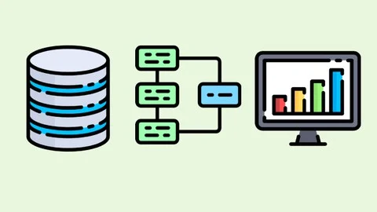
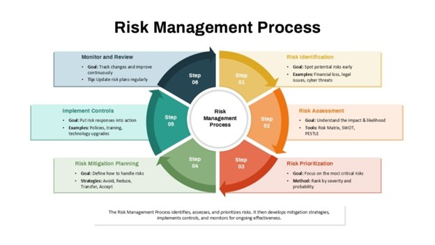

Modern accounting performance is no longer driven by isolated spreadsheets. It is driven by a deliberate, engineered data architecture. A high-performing finance function begins with a centralized data foundation built on structured pipelines, standardized schemas, and governed data flows. Instead of manually reconciling fragmented reports, leading organizations implement ETL (Extract, Transform, Load) processes and data warehousing strategies that keep financial data clean, consistent, and audit-ready.
Platforms such as Snowflake enable scalable, cloud-based data consolidation, allowing organizations to unify financial and operational datasets into a single source of truth. Once structured, tools like Tableau transform that data into dynamic dashboards that support faster, insight-driven decision-making.
By implementing data governance frameworks, enforcing data integrity controls, and designing systems for real-time visibility, accounting teams eliminate redundancy, reduce reconciliation friction, and improve reporting accuracy. The result is a more data-driven finance function.
Modern accounting efficiency is achieved through the intentional design of automated workflows, not manual repetition. Intelligent process automation replaces repetitive tasks with rule-based systems and logic-driven execution layers that operate with speed and consistency.
Instead of relying on manual intervention for routine classifications and reconciliations, organizations deploy Robotic Process Automation (RPA). Platforms such as UiPath help automate high-volume accounting work, while tools like Zapier support seamless integration between systems.
ERP-focused automation can also be explored further through the ERP Systems page. By implementing process standardization, automation pipelines, and decision-rule frameworks, accounting teams reduce cycle times and strengthen consistency.

High-performing accounting systems are not built to manually inspect everything. They are designed to surface what matters. Exception management introduces a risk-based control framework in which unusual items are escalated for human review while routine activity flows through a more efficient process.
Visualization and monitoring tools such as Microsoft Power BI and Alteryx enable organizations to build dashboards that highlight variances, outliers, and control breaches in real time. This helps teams identify issues before they become larger reporting or operational problems.
Through the use of automated control checks, variance analysis models, and continuous monitoring systems, organizations move toward proactive financial governance.